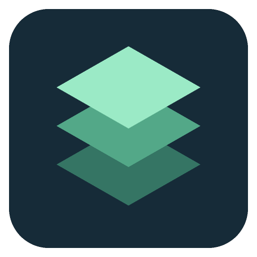

Which folder was that branch in?
Discover projects from Codex and Claude Code metadata, local folders, and Git worktrees. See related checkouts together with their branch names.
Open the workspace you mean.

BranchDeckFOR DEVELOPERS WORKING ACROSS WORKTREES
Find the right checkout.
Come back to a running terminal.
Working with Codex, Claude Code, and several Git worktrees? BranchDeck brings each local checkout, its useful commands, and its terminals into one macOS workspace.
Apple Silicon · v0.10.1 · Chinese interface
Concept illustration using a fictional project.
THE MOMENT IT HELPS
Keep the main app running while you test a feature branch. Then return to the terminal you left.
Interactive illustration, not a live app or terminal. All project names and output are examples.
~/Projects/orbit-webnpm run dev$ npm run dev Local: http://localhost:5173/ Ready. Watching for changes.
Main has its own dev process. It stays running when you switch workspaces.
Sessions stay alive while BranchDeck is running. Fully quitting stops terminals and managed services; reopening does not restore them.
WHY ADD IT TO YOUR SETUP?
Your editor holds the code. BranchDeck keeps the checkout, repeatable commands, and running terminals together.
Discover projects from Codex and Claude Code metadata, local folders, and Git worktrees. See related checkouts together with their branch names.
Open the workspace you mean.
Keep shortcuts from recognized project scripts and matching shell history. Review suggestions, edit the command, and choose when it runs.
Keep the command with the project.
Return to the workspace’s terminal tabs and output. Services get dedicated tabs, and launching the same service again focuses its existing tab.
Get back to the process you started.
If you mostly work in one repository and your existing terminal setup feels effortless, BranchDeck may add less value. It is built for the context switching that comes with parallel local work.
YOUR SHELL. YOUR MACHINE.
Use interactive zsh with your aliases, completion, and shell configuration. BranchDeck reads project metadata, not coding conversation bodies.
Workspace discovery and shell-history processing happen locally. Commands you execute can still access files and network services through your shell.
How local data is handledTRY IT WITH TWO CHECKOUTS
Open a project, start its dev command, visit another worktree, and come back. See whether keeping those pieces together fits the way you work.
Installation & getting startedEnglish UI is in development and is not included in this download. Requires your existing shell and project tools. Distributed outside the Mac App Store.
BEFORE YOU DOWNLOAD
No. BranchDeck discovers local project metadata and organizes the surrounding workspaces, commands, and terminals. It does not read conversation bodies or coordinate AI agents.
No. Discovery and import only prepare configuration or suggestions. You choose when to execute a command. History matching uses explicit directory information or unambiguous project configuration; it does not infer a directory from a previous cd command.
Closing the window keeps BranchDeck in the menu bar with its sessions running. Fully quitting stops its terminals and managed services. Sessions are not restored and commands are not replayed on the next launch.
The download on this page is for Apple Silicon Macs. Windows and remote workspace management are outside the current scope. It uses local interactive zsh sessions.
No BranchDeck account is required for local workspace discovery and terminal use. Your own commands and coding tools may need network access or their own accounts.